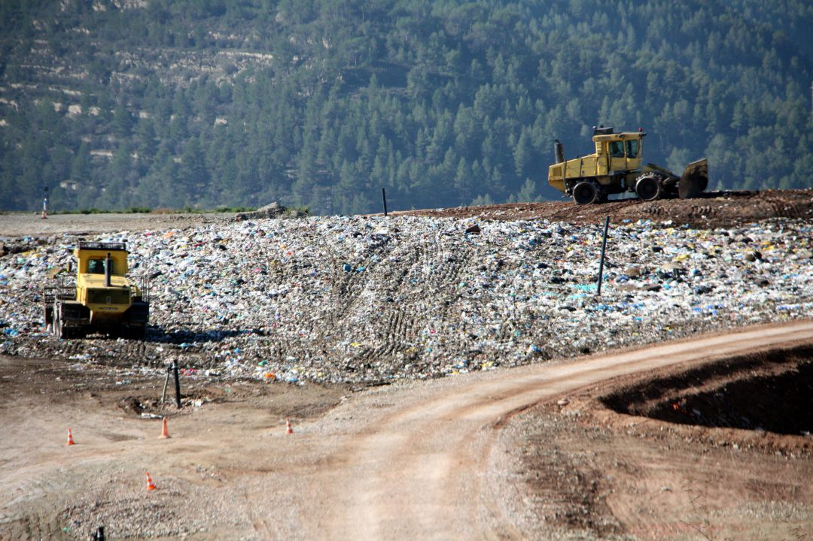
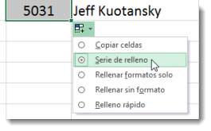

Bienvenido!
El rellenado es un concepto con múltiples usos, en su sentido más amplio, se refiere a lo que se usa para llenar o completar algo por ejemplo : 'Todavía tengo que preparar el relleno de las empanadas', 'Necesito más material de relleno para llegar a las 1.500 palabras en esta composición', “El gobierno debería controlar el vertedero de esta ciudad ”.
Gastronomia En el ámbito de la gastronomía , el vertedero está formado por los ingredientes que se introducen en otro alimento. Es posible preparar un pollo cuyo relleno sea jamón y queso o un pavo que tenga varias verduras como relleno, por nombrar algunas posibilidades. Las sustancias o materiales que se utilizan para rellenar un objeto no comestible también se denominan rellenos: un osito de peluche o felpa puede tener un relleno de algodón, una almohada puede tener un relleno de plumas...
Vertedero? Vertedero , por su parte, es la técnica que permite enterrar residuos sólidos con riesgos controlados para la salud pública. Este vertedero se forma a partir de tareas de compactación y adición de suelo para que la basura reduzca su volumen.
Entretenimiento Como implica un ejemplo del primer párrafo, el concepto de relleno no siempre tiene una connotación positiva, por ejemplo, si se refiere a una serie de párrafos que tienen la función de extender un texto sin proporcionar contenido relevante o de calidad, entonces es un significado negativo, aunque esto es muy común en diferentes contextos. Lleno, finalmente, es algo accesorio o superficial : 'Me gustó la película, aunque tenía demasiadas escenas de relleno' , 'Si quitas los capítulos de relleno, más que una novela sería un cuento ”.
Definicion relleno, a 1. adj. Que está lleno o muy lleno tiene las piernas más bien rellenas. atiborrado, regordete 2. COCINA Se aplica al alimento preparado con diversas sustancias en su interior ha preparado pollo relleno. 3. s. m. Acción y resultado de rellenar una cosa cuando acabe con el relleno de las botellas, te ayudo. 4. Cualquier material con que se rellena una cosa o se ocupa un hueco el relleno de los almohadones es de pluma de ave . 5. COCINA Picadillo sazonado de carne, hierbas u otros ingredientes con que se rellena un alimento para cocinarlo para hacer el relleno, sofríe la carne con la berenjena. 6. Parte superflua que aumenta el volumen, la longitud o la apariencia de una cosa la sala estaba tan vacía de muebles que colocó unos jarrones en el suelo como relleno. 7. de relleno loc. adv. Que es superfluo y sirve para completar o llenar lo que se dice o un hueco.
Tiempo de vida para la pagina de rellenos
| Desafio 1 | Completado! |
| Desafio 2 | Completado! |
| Pre-Entrega 1 | Completado! |
| Desafio 3 | Completado! |
| Desafio 4 | Completado! |
| Desafio 5 | Completado! |
| Desafio 6 | Completado! |
| Desafio 7 | Completado! |
| Pre-Entrega 2 | Completado! |
| Desafio 8 | En Proceso |
| Desafio 9 | Incompleto |
| Pre-Entrega 3 | Incompleto |
| Desafio 10 | Incompleto |
| FINAL | Incompleto |